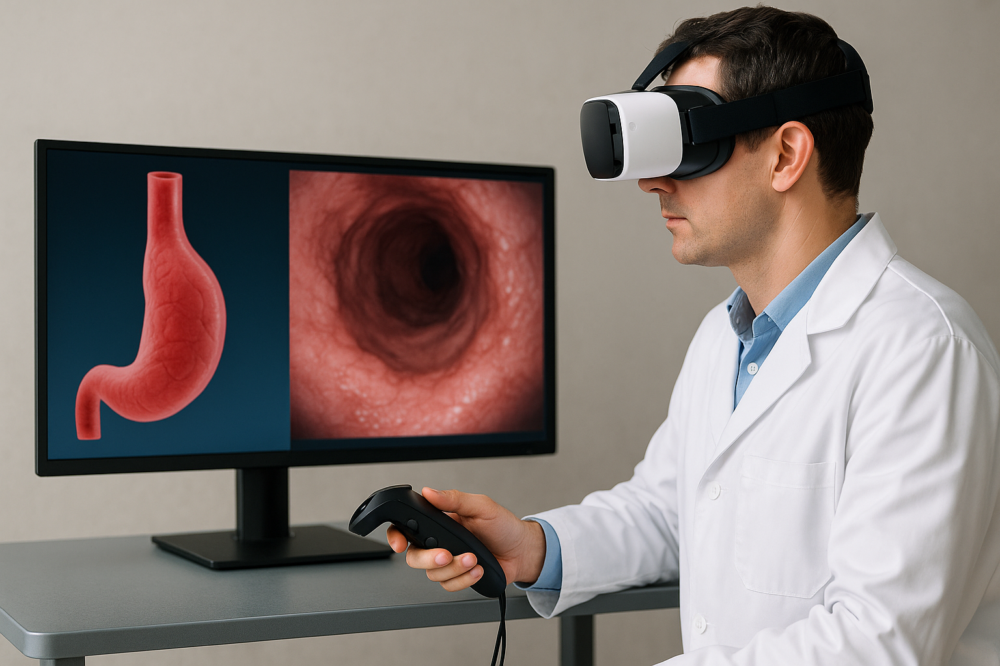

Image: Christoph Palm, created with the help of ChatGPT/DALLE-E, Open AI, 2025
Motivation
EndoPlan-3D aims to create a Al-supported, interactive 3D environment that optimizes surgical interventions for early gastrointestinal neoplasia. The central aim of the project is to enable more precise and reliable planning of endoscopic interventions by processing multimodal data from white light endoscopy and endosonography using AI algorithms to create dynamic, individual 3D models. Doctors will be able to reliably identify tumor boundaries, critical hotspots and optimal resection methods using a VR-based interaction environment. The planned technology includes the creation of realistic 3D visualizations from endoscopic video data using innovative AI processes. These models are supplemented by acoustic and tactile feedback for better identification of critical tumor sites and for determining optimal surgical instrument settings. The results are exploited both economically and scientifically: EndoPlan-3D not only aims to reduce incorrect decisions and lower the risk of recurrence, but also to improve surgical quality and patient care in the long term.
Goals and Procedure
EndoPlan-3D aims to create a Al-supported, interactive 3D environment that optimizes surgical interventions for early gastrointestinal neoplasia. The central aim of the project is to enable more precise and reliable planning of endoscopic interventions by processing multimodal data from white light endoscopy and endosonography using AI algorithms to create dynamic, individual 3D models. Doctors will be able to reliably identify tumor boundaries, critical hotspots and optimal resection methods using a VR-based interaction environment. The planned technology includes the creation of realistic 3D visualizations from endoscopic video data using innovative AI processes. These models are supplemented by acoustic and tactile feedback for better identification of critical tumor sites and for determining optimal surgical instrument settings. The results are exploited both economically and scientifically: EndoPlan-3D not only aims to reduce incorrect decisions and lower the risk of recurrence, but also to improve surgical quality and patient care in the long term.
Innovations and Perspectives
The developed system uses video data to create a three-dimensional model of the esophagus that shows the exact boundaries of the tumor, thereby facilitating surgical planning. The technology can also be applied to other surgical procedures.
Cooperation Partner
Funding
BMFTR project "EndoPlan-3D: Precision surgery with AI-supported 3D planning for gastroenterology",
Funding reference: 16SV9556

Period and Volume
November 2025 to October 2029
Total project approx. € 1.37 million, sub-project of OTH
Regensburg approx. € 473 thousand